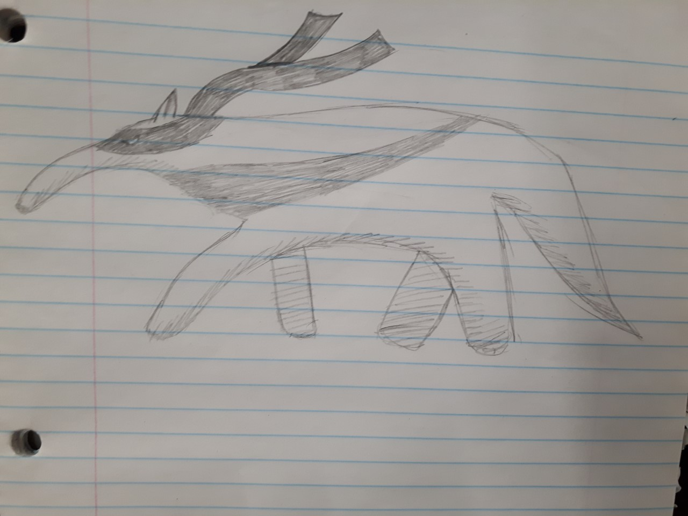

Ninja Kangaroo

Like other "ninja" species, the Ninja Kangaroo has a black bandana wrapped around its eyes that gives the appearance of a ninja. During territorial fights, we observed a strange phenomenon. The males store shurikens in their pouches and throw them at their opponent. We do not know how or where they get their shurikens. Further observation is needed.
Rabninja

A rare animal in the island. These animals belong to mammals. They are 10 feet and weigh around 6 lbs approx.
These animals are herbivores. They rely on the herbs available on island.
Geodude

The Gonunja, or Geodude as its more commonly being referred to as is the only reptile-like ninja of its kind. Unlike other ninja-headband wearing species,
the Geodude is a nocturnal ninja. Preferring the obscurity of night to do about its hunting of berries and small insects, such as the green-crested ladybug,and spotted zit ant.
By definition the Geodude buries itself in the earth. During the day it will cover itself to protect from the sun and to keep warm.
Ninja Anteater

The ninja anteater has been observed to mediatate next to slow travelling rivers and streams. It seems to be the most calm recipient of Toha Island. Its diet consists only of the flying mantis.